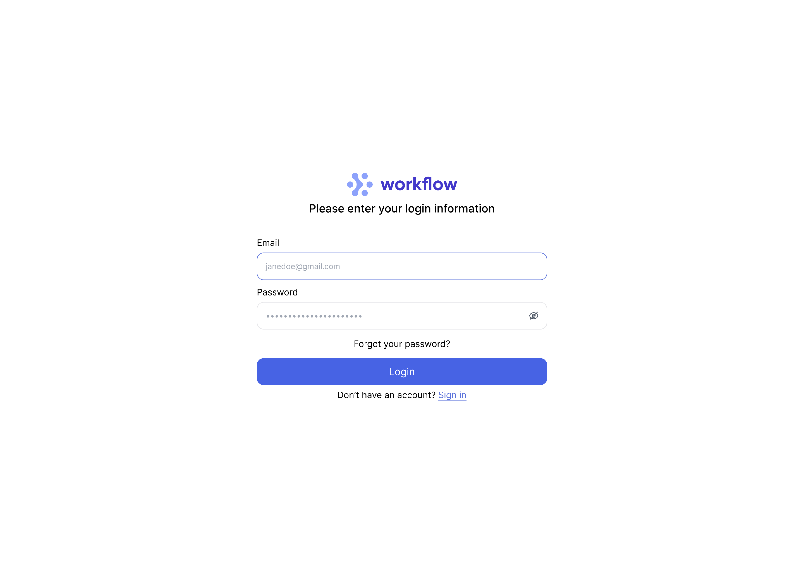

Workflow ↗
A task management system that lets users create custom milestones for each task. I got the idea when I was at work. I needed a really simple way to be able to keep track of my todos, but I couldn't find an app that had everything I was looking for. Jira's too much, and a regular todo list is too simple. So I'm making this now. Work in progress.
Made with: React, Firebase, SCSS/SASS, Node, Express, Jest, Figma